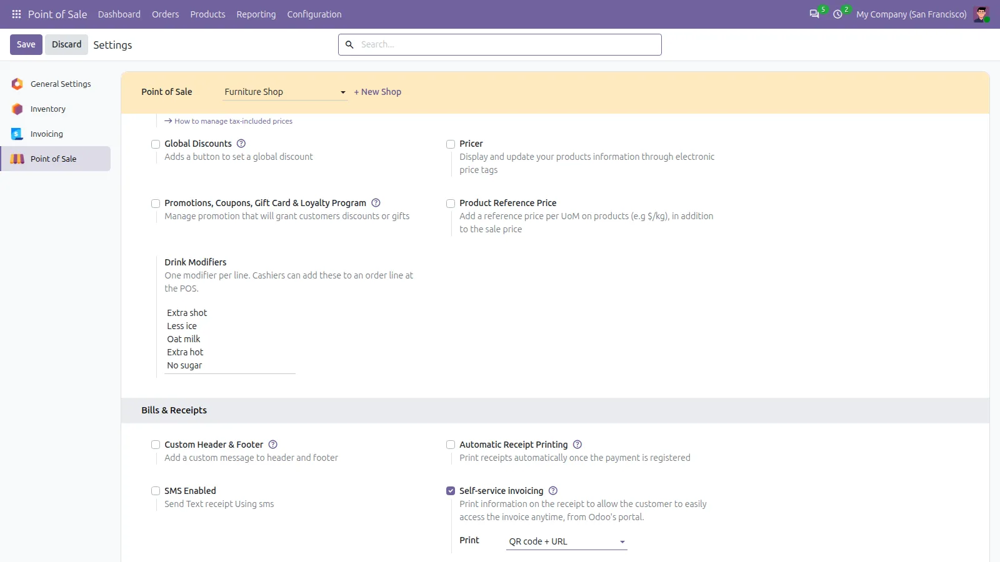
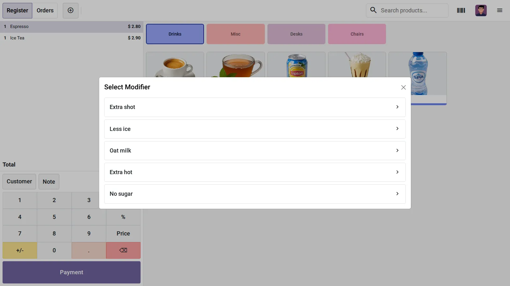
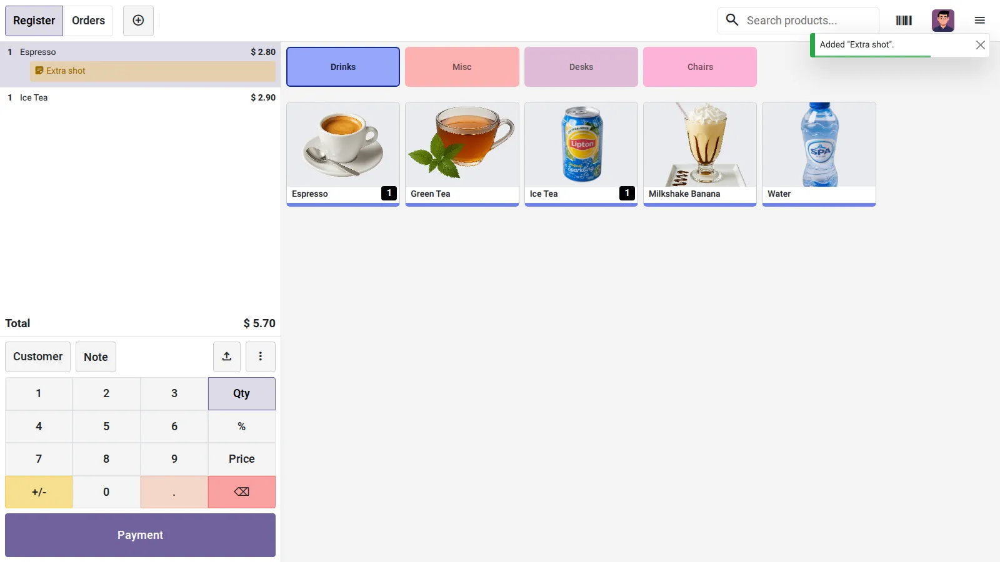

POS Drink Modifier
Quick drink/order modifiers added to a line at the POS
- Price
- $19
- Odoo versions
- 16.0
- 17.0
- 18.0
- 19.0
- 20.0
- Technical name
tamadoo_pos_drink_modifier- License
- OPL-1
Odoo 20.0: not listed on the store yet. Ask at tama.odoo@gmail.com.

Text and screenshots below are from the Odoo 20.0 version of this module.
Add quick modifiers to an order line at the Point of Sale.
What it does
Configure a list of quick modifiers per Point of Sale (for example Extra shot, Less ice, Oat milk). A Modifier button lets the cashier tag the selected order line in one tap — the modifier is added to the line's note and printed on the receipt.
Key features
- Per-POS modifier list (one per line).
- Modifier control button with a quick selection popup.
- Multiple modifiers per line are supported.
- Modifiers appear on the order line and the receipt.
How to use — step by step
1. Configure your modifiers
Point of Sale → Configuration → Settings → Pricing → Drink Modifiers (one per line).

2. Tap "Modifier" in the Actions menu and pick one
Tap the ⋮ button next to the control buttons to open Actions, then tap Modifier.

3. The modifier is added to the line

Requirements
- Odoo 20 — Point of Sale (
point_of_sale).
Tamadoo · tama.odoo@gmail.com
Get POS Drink Modifier
Odoo 20.0: not listed on the store yet. Ask at tama.odoo@gmail.com.
Questions before buying? Write to tama.odoo@gmail.com.